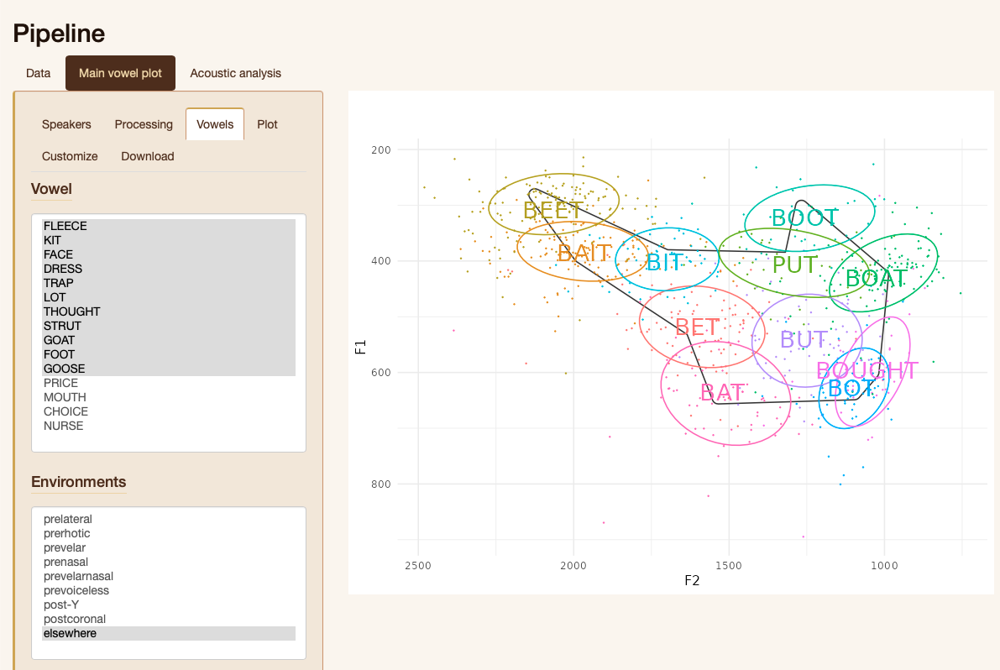

Sociophonetics
Pipeline
Sending your DARLA or new-fave data through a pipeline of sociophonetic data processing, explore it with interactive vowel plots, and conduct basic statistical analysis.
Open app